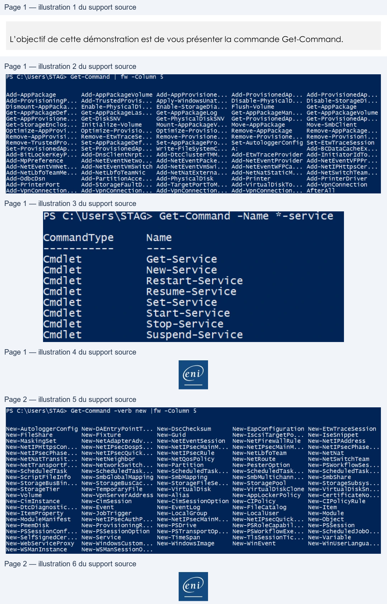

Transcription du document du Drive TSSR. La mise en forme est adaptée au Web ; les compléments IA du portail sont présentés séparément.
Initiation au Scripting avec PowerShell
Démonstration 03 du module 1
L’objectif de cette démonstration est de vous présenter la commande Get-Command.
• Pour obtenir la liste de toutes les commandes disponibles, utiliser la Cmdlet Get-Command
Le nombre de commandes disponible est très important. Nous avons ici un aperçu des
commandes disponibles.
Afin de filtrer le résultat de sortie, utiliser le caractère * sur le paramètre Name.
Pour filtrer les commandes sur le verbe d’action, utiliser le caractère * sur le paramètre verb.
Page 1/2
© ENI – Tous droits réservés
PS C:\Users\STAG> Get-Command
|
fw -Column
5
Add-AppPackage
Add-AppPackageVolume Add-AppProvisione...
Add-ProvisionedAp...
Add-ProvisionedAp...
Add-ProvisioningP...
Add-TrustedProvis...
Apply-WindowsUnat...
Disable-PhysicalD...
Disable-StorageDi...
Dismount-AppPacka...
Enable-PhysicalDi...
Enable-StorageDia...
Flush-Volume
Get-AppPackage
iGet-AppPackageDef...
Get-AppPackageLas...
Get-AppPackageLog
Get-AppPackageMan...
Get-AppPackagevolume
IGet-AppProvisione...
Get-DiskSNV
Get-PhysicalDiskSNV
Get-ProvisionedAp...
Get-ProvisionedAp...
iGet-StorageEnclos...
Initialize-Volume
Mount-AppPackageV...
Move-AppPackage
Move-SmbClient
lOoptimize-AppProvi...
Optimize-Provisio...
Optimize-Provisio...
Remove-AppPackage
Remove-AppPackage...
Remove-AppProvisi...
Remove-EtwTraceSe...
Remove-Provisione...
Remove-Provisione...
Remove-Provisioni...
Remove-TrustedPro...
Set-AppPackageDef...
Set-AppPackagePro...
Set-AutologgerConfig Set-EtwTraceSession
ISet-ProvisionedAp...
Set-ProvisionedAp...
Write-FileSystemC...
A:
Add-BCDataCacheEx...
Add-BitLockerKeyP...
Add-DnsClientNrpt...
Add-DtcClusterTMM...
Add-EtwTraceProvider Add-InitiatorIdTo...
lAdd-MpPreference
Add-NetEventNetwo... Add-NetEventPacke... Add-NetEventProvider Add-NetEventVFPPr...
lAdd-NetEventVmNet...
Add-NetEventvmswitch Add-NetEventvmswi...
Add-NetEventWFPCa...
Add-NetIPHttpsCer...
Add-NetLbfoTeamMe...
Add-NetLbfoTeamNic
Add-NetNatExterna...
Add-NetNatStaticM...
Add-NetswitchTeam...
Add-0dbcDsn
Add-PartitionAcce...
Add-PhysicalDisk
Add-Printer
Add-PrinterDriver
Add-PrinterPort
Add-StorageFaultD...
Add-TargetPortToM...
Add-VirtualDiskTo...
Add-VpnConnection
Add-VpnConnection...
Add-VpnConnection...
Add-VpnConnection...
Add-VpnConnection...
AfterAl]
PS
C:\Users\STAG>
Get-Command
-Name
*-service
CommandType
Name
Cmdlet
Get-Service
Cmdlet
New-Service
Cmdlet
Restart-Service
Cmdlet
Resume-Service
Cmdlet
Set-Service
Cmdlet
Start-Service
Cmdlet
Stop-Service
Cmdiet
Suspend-Service
@
Initiation au Scripting avec PowerShell
Nous avons toutes les commandes qui utilisent le verbe New.
Page 2/2
© ENI – Tous droits réservés
PS C:\Users\STAG> Get-Command
-verb
new
|fw -Column
5
INew-AutologgerConfig New-DAEntryPointT...
New-DscChecksum
New-EapConfiguration New-EtwTraceSession
INew-Fi leShare
New-Fixture
New-Guid
New-IscsiTargetPo... New-IseSnippet
INew-MaskingSet
New-NetAdapterAdv... New-NetEventSession
New-NetFirewallRule
New-NetIPAddress
INew-NetIPHttpsCon...
New-NetIPsecDospS...
New-NetIPsecMainM...
New-NetIPsecMainM...
New-NetIPsecPhase...
INew-NetIPsecPhase...
New-NetIPsecQuick...
New-NetIPsecRule
New-NetLbfoTeam
New-NetNat
INew-NetNatTransit...
New-NetNeighbor
New-NetQosPolicy
New-NetRoute
New-NetSwitchTeam
New-NetTransportF...
New-NetworkSwitch...
New-Partition
New-PesterOption
New-PSWorkflowSes..
INew-Schedu ledTask
New-ScheduledTask... New-ScheduledTask...
New-ScheduledTask... New-ScheduledTask...
INew-ScriptFileInfo
New-SmbGlobalMapping New-SmbMapping
New-SmbMultichann...
New-SmbShare
INew-StorageBusBin...
New-StorageBusCac...
New-StorageFileSe...
New-StoragePool
New-StorageSubsys...
New-StorageTier
New-TemporaryFile
New-VirtualDisk
New-VirtualDiskClone New-VirtualDiskSn..
INew-Vo lume
New-VpnServerAddress New-Alias
New-AppLockerPolicy
New-CertificateNo..
New-CimInstance
New-Cimsession
New-CimSessionOption
New-CIPolicy
New-CIPolicyRule
INew-DtcDiagnostic...
New-Event
New-EventLog
New-FileCatalog
New-Item
New-ItemProperty
New-JobTrigger
New-LocalGroup
New-LocalUser
New-Module
INew-Modu 1eMani fest
New-NetIPsecAuthP...
New-NetIPsecMainM... New-NetIPsecQuick...
New-Object
INew-PmemDisk
New-ProvisioningR...
New-PSDrive
New-PSRoleCapabil...
New-PSSession
INew-PSSessionConf...
New-PSSessionOption
New-PSTransportOp...
New-PSWorkflowExe...
New-Scheduledjobo...
INew-SelfSignedcer...
New-Service
New-TimeSpan
New-TlsSessionTic...
New-Variable
INew-WebServiceProxy
New-WindowsCustom...
New-WindowsImage
New-WinEvent
New-WinUserLangua...
New-WwSManInstance
New-WSManSessiono...
@
